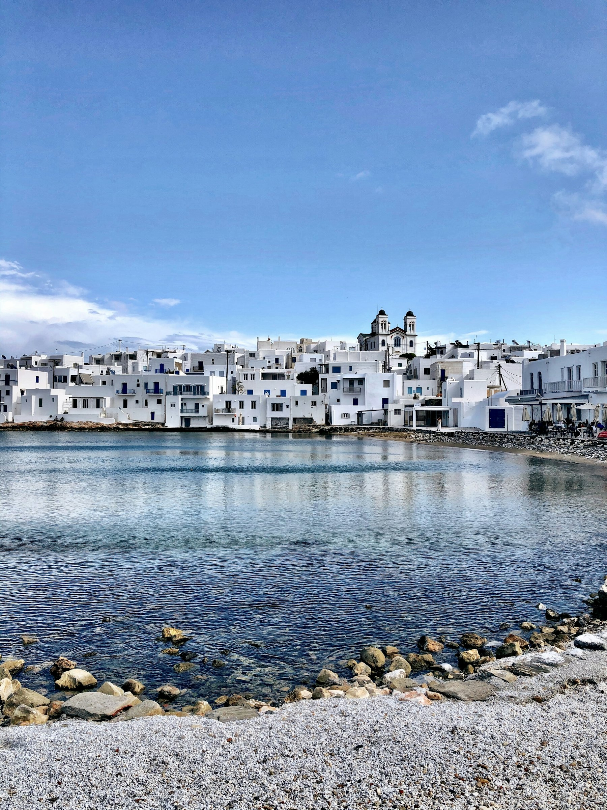

Retraite d'entreprise : Cyclades (Paros & Naxos)
Villages blancs, villas sur les collines et voile entre les îles.
Le format idéal pour une équipe de 10 à 40 personnes : une ou deux grandes villas sur Paros ou Naxos, plus authentiques et plus calmes que Santorin ou Mykonos, et une journée de voile entre les îles.
Activités pour l'équipe
- Journée de voile entre Paros et Antiparos
- Randonnée entre villages
- Cours de cuisine dans une villa
- Coucher de soleil à Naoussa
Exemple de programme
Une base de 3 jours, adaptée à vos objectifs, à votre budget et à la taille du groupe.
- Arrivée, villa, dîner sur la terrasse
- Atelier le matin, voile vers Antiparos
- Randonnée entre villages, départ
Temps de vol depuis vos bureaux
Indicatif, vol direct quand il existe. Nous réservons les vols de chaque participant, quelle que soit sa ville.
- Paris≈ 3 h 45
- Londres≈ 4 h
- Berlin≈ 3 h 15
- Amsterdam≈ 3 h 45
- Lisbonne≈ 4 h 30
Questions fréquentes : Cyclades (Paros & Naxos)
Pourquoi choisir Cyclades (Paros & Naxos) pour une retraite ?
Villages blancs, villas sur les collines et voile entre les îles.
Comment s'y rendre ?
Vol vers Athènes puis ferry rapide ou vol court vers Paros ; vols directs saisonniers vers Naxos et Paros. Nous réservons les vols de chaque participant depuis sa ville et coordonnons les arrivées.
Quelle est la meilleure période ?
Mai, juin et septembre.
Où loger un groupe ?
Villas privatisées, petits hôtels boutique. Au-delà de 60 personnes, nous combinons plusieurs lieux ou privatisons un hôtel.
Quelles activités pour l'équipe ?
Journée de voile entre Paros et Antiparos, Randonnée entre villages, Cours de cuisine dans une villa, Coucher de soleil à Naoussa.
Quel budget prévoir ?
Cela dépend du nombre de nuits, du niveau du lieu et des villes de départ. Notre calculateur donne une première fourchette, et nos 3 propositions détaillent le budget exact par personne, vols compris.